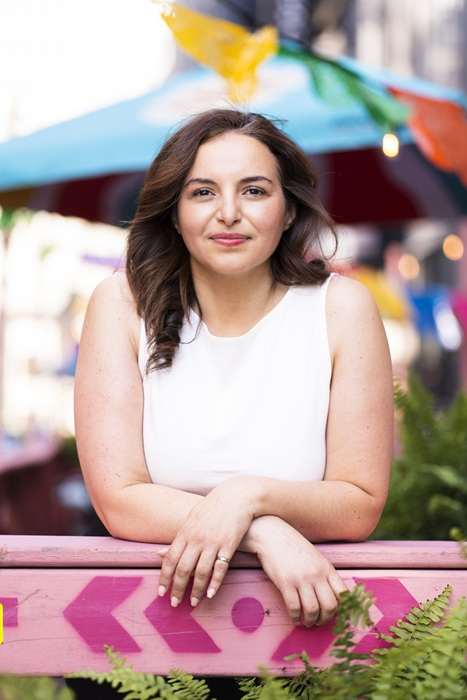

Cher propriétaire d'entreprise,
Le prochain chapitre de votre entreprise mérite le même soin que le premier.
Si vous commencez à réfléchir à votre succession, j'espère que cette lettre vous aidera à déterminer si je suis la personne à qui vous pourriez confier ce que vous avez bâti.
Continuer la lecture ↓
Il arrive un moment, dans le parcours de chaque fondateur, où la question change tranquillement.
Pendant des années, la question était de bâtir. Vous avez investi quand d'autres hésitaient. Vous avez embauché des gens qui sont devenus une partie de votre histoire. Vous avez résolu des problèmes que personne d'autre ne voyait, et vous avez pris des milliers de petites décisions qui sont devenues l'entreprise que vos employés et vos clients connaissent aujourd'hui.
Puis, presque sans qu'on s'en rende compte, une autre question prend sa place.
Qui va poursuivre ce que j'ai passé ma vie à bâtir ?
Pour bien des fondateurs, cette question compte bien plus que le prix.
Parce que vous ne vendez pas simplement une entreprise. Vous transmettez des années de sacrifices, le gagne-pain de vos employés, la fidélité de vos clients, et une réputation qui a peut-être pris des décennies à se construire.
Vous transmettez une culture, une façon de diriger, une façon de traiter les gens.
Quand la question de la succession se pose, la conversation se tourne souvent immédiatement vers l'évaluation, le financement et la structure juridique. Ces discussions comptent. Mais ce n'est pas la première. La première conversation, c'est celle de la confiance.
J'ai fondé Capital Orenda Continuum autour d'une conviction : les entreprises exceptionnelles méritent un successeur qui comprend ce qu'elles représentent avant de décider ce qu'elles valent.
Avant de parler de croissance, je veux comprendre ce qui ne devrait jamais changer.
Lire la suite de mon histoire →J'acquiers et je dirige personnellement une entreprise canadienne établie, à long terme, avec l'appui de Capital Orenda Continuum.
Découvrez mon approche de la succession →